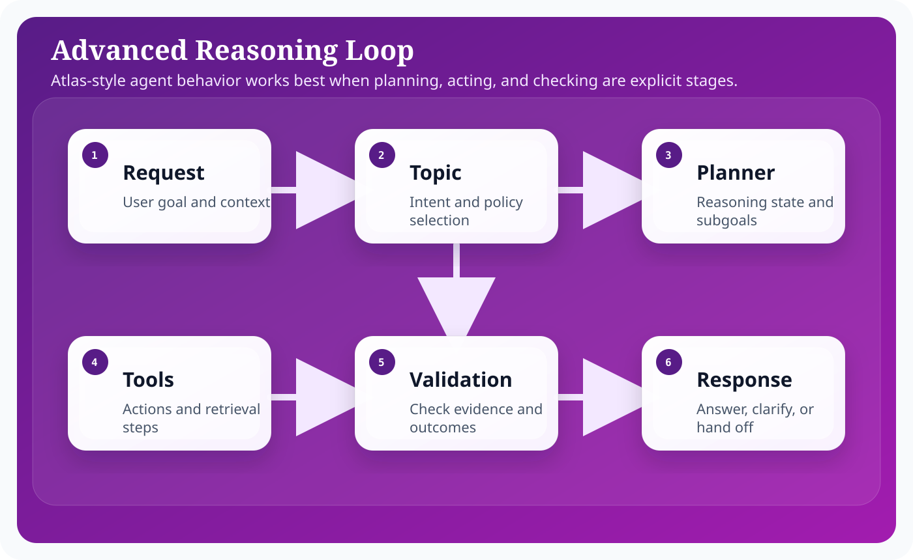
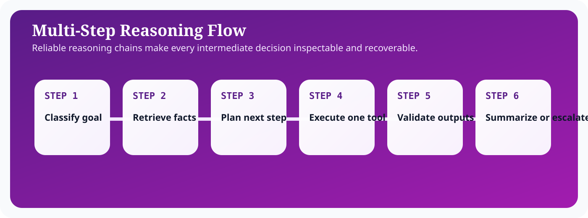

Introduction
Salesforce Agentforce matters because enterprise teams do not need another isolated chatbot; they need an execution surface that can reason over business context, stay inside platform controls, and complete work across Salesforce workflows. In practical terms, that means combining language understanding with CRM records, metadata, automation, and operational policy. The most useful framing is to treat Agentforce as an orchestration layer sitting between human intent and governed business actions.
For architects, admins, and developers, the design question is not whether an LLM can produce fluent output. The harder question is how you bound that output with trusted data, deterministic automations, explicit approvals, and observability. This guide focuses on the implementation tradeoffs, runtime boundaries, and delivery decisions that shape reasoning work in Agentforce. That is why successful Agentforce implementations start from architecture, identity, and process design before they focus on polished conversational experiences.
A strong Reasoning implementation usually follows the same pattern: define the business objective, identify the records and actions the agent can use, design prompts that encode policy and tone, expose actions through Flow or Apex, and then measure outcomes with operational telemetry. This pattern keeps the solution explainable and creates a handoff model that admins, architects, developers, and service leaders can all understand.
Architecture explanation
Advanced reasoning is best modeled as a state machine. The agent should move through grounded steps such as classify, retrieve, plan, act, verify, and summarize instead of attempting to solve everything in one opaque generation.
Atlas reasoning is most useful when it is decomposed into inspectable stages: classify the request into a topic, retrieve trusted information, plan the next step, execute one tool or action, then reflect on the result. That is closer to the official reason-act-observe description than a one-shot prompt-response diagram.
Advanced Multi-Step AI Agent Reasoning works best when the architecture separates conversational intent from deterministic execution. Topics and instructions tell the agent what kind of work it is doing. Grounding layers bring in trusted business facts from Salesforce data, knowledge, Data Cloud, or external systems. Actions then convert the plan into platform work through Flow, Apex, or governed API calls. Trust controls wrap the entire path so data access, generated output, and side effects remain observable and policy-bound.

These layers are useful because they help teams decide where a problem belongs. If the answer is wrong, the issue may sit in grounding. If the action is unsafe, the problem sits in permissions or execution validation. If the result is verbose or inconsistent, the issue is often in prompting or output schema. Separating the architecture this way keeps debugging concrete, which is essential when an implementation grows across multiple teams.
In enterprise delivery, it also helps to think about control planes versus data planes. The control plane contains metadata, prompts, access policy, model selection, testing, and release procedures. The data plane contains the live customer conversation, retrieved records, outbound actions, and operational telemetry. This distinction prevents teams from mixing authoring concerns with runtime concerns and makes promotion across sandboxes significantly easier.
The most reliable Agentforce implementations keep the model responsible for reasoning and language, while deterministic platform services remain responsible for data integrity, approvals, and side effects.
Step-by-step configuration
Configuration work succeeds when the team treats Agentforce setup as a sequence of platform decisions rather than a single wizard. The steps below reflect the order that keeps dependencies visible and avoids rework later in the release.

Reasoning systems fail through accumulation, so the diagram below breaks the flow into inspectable stages with an explicit validation step before the final response. That is the operational difference between a demo and a production agent.
- Break the target workflow into explicit reasoning stages such as classify, retrieve, plan, act, validate, and summarize.
- Design prompts or sub-prompts that correspond to those stages instead of using one monolithic instruction.
- Use structured intermediate outputs so each stage can be inspected, logged, and verified.
- Gate high-impact actions behind validation rules, confidence checks, or human approval points.
- Tune retrieval so the reasoning chain is grounded on trusted facts rather than latent model assumptions.
- Simulate long or ambiguous requests to ensure the agent can recover gracefully instead of compounding mistakes.
- Track per-step latency and error sources because multi-step systems often degrade through accumulation rather than one obvious fault.
In advanced reasoning systems, most quality defects are coordination defects. The agent may retrieve the right facts but plan the wrong action, or it may plan correctly but summarize poorly. That is why per-stage evaluation is more useful than one blended quality score.
Code examples
Enterprise teams need concrete implementation patterns because agent behavior eventually resolves into platform metadata and code. Advanced reasoning becomes manageable when state and validation are structured. These examples show the intermediate artifacts that make multi-step execution inspectable.
Multi-step reasoning state example
{
"request": "Prepare a renewal risk assessment and recommend the next action.",
"state": {
"topic": "renewal-risk-review",
"subgoals": [
"retrieve current renewal opportunity",
"check product adoption trend",
"identify unresolved support issues"
],
"completed": [],
"pendingValidation": []
}
}Intermediate validation schema
{
"evidence": [
{
"source": "Opportunity",
"recordId": "006xx000004TQ9A",
"claim": "Renewal closes in 21 days"
}
],
"decision": "Recommend executive outreach",
"validation": {
"missingRequiredEvidence": false,
"humanApprovalRequired": true
}
}Operating model and delivery guidance
Agentforce projects become easier to sustain when the delivery model is explicit. Administrators typically own prompt authoring, channel setup, and low-code automations. Developers own custom actions, advanced integrations, and test harnesses. Architects own the capability boundary, trust assumptions, and release model. Service or sales operations leaders own business acceptance and the definition of success.
That separation matters because long-term quality depends on ownership. If everyone can tune everything, nobody can explain why behavior changed. If prompts, flows, and actions are versioned with release notes, then a regression can be traced back to a concrete modification. This is the same discipline teams already apply to code; Agentforce just expands the surface area that needs that discipline.
It is also useful to define an evidence loop. Capture representative transcripts, measure action success rate, compare containment against downstream business metrics, and review edge cases at a fixed cadence. Over time, this evidence loop becomes more valuable than intuition. It tells you whether a prompt change improved quality, whether a new action reduced manual effort, and whether an escalation rule is too sensitive or too lax.
Teams should also decide how documentation, enablement, and support ownership work after launch. A static runbook for incident handling, a changelog for prompt revisions, and a named owner for every high-impact action are simple controls that prevent ambiguity when the agent starts operating at scale.
Best practices
- Decompose complex tasks into inspectable stages.
- Use intermediate schemas rather than free-form chain output.
- Add validation between planning and execution.
- Limit the number of tools available per stage.
- Optimize for recovery from partial failure.
Conclusion
Advanced reasoning should make an agent more inspectable, not more mysterious. By decomposing work into grounded stages, validating intermediate decisions, and monitoring each step, teams can deliver sophistication without surrendering control. That is the right standard for enterprise AI on Salesforce.
For Salesforce teams, the practical lesson is consistent: start from business flow, ground the model on trusted enterprise context, expose only the actions you can govern, and measure what the agent actually changes in production. That is how Agentforce becomes a durable platform capability instead of a short-lived proof of concept.